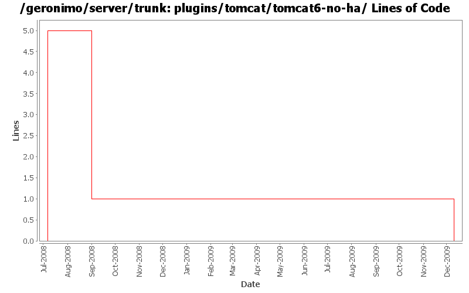

[root]/plugins/tomcat/tomcat6-no-ha
 src
(0 files, 0 lines)
src
(0 files, 0 lines)
 main
(0 files, 0 lines)
main
(0 files, 0 lines)
 history
(0 files, 0 lines)
history
(0 files, 0 lines)
 plan
(0 files, 0 lines)
plan
(0 files, 0 lines)

| Author | Changes | Lines of Code | Lines per Change |
|---|---|---|---|
| Totals | 4 (100.0%) | 6 (100.0%) | 1.5 |
| gdamour | 1 (25.0%) | 5 (83.3%) | 5.0 |
| djencks | 2 (50.0%) | 1 (16.7%) | 0.5 |
| xuhaihong | 1 (25.0%) | 0 (0.0%) | 0.0 |
GERONIMO-4980 Use Tomcat 7 in Geronimo 3.0
0 lines of code changed in 1 file:
GERONIMO-4655 upgrade version to 3.0-SNAPSHOT, make a few things more consistent
1 lines of code changed in 1 file:
GERONIMO-4239, sort of. Use transitive depenedencies in c-m-p everywhere. This may break stuff.... let me know
0 lines of code changed in 1 file:
Fix a classloader clash happening when a WADI clustered application is
deployed: Tribes classes were loaded by the configurations
org.apache.geronimo.configs/tomcat6//car and
org.apache.geronimo.configs/wadi-clustering//car and should only be loaded
by the wadi-clustering configuration.
Add a org.apache.geronimo.configs/tomcat6-no-ha//car configuration, which
imports org.apache.geronimo.configs/tomcat6//car and hides the Tribes classes.
When a WADI clustered application is built, the tomcat6 configuration is
removed from the clustered application ancestor list and replaced by
tomcat6-no-ha. Tribes classes are now loaded by wadi-clustering.
5 lines of code changed in 1 file: